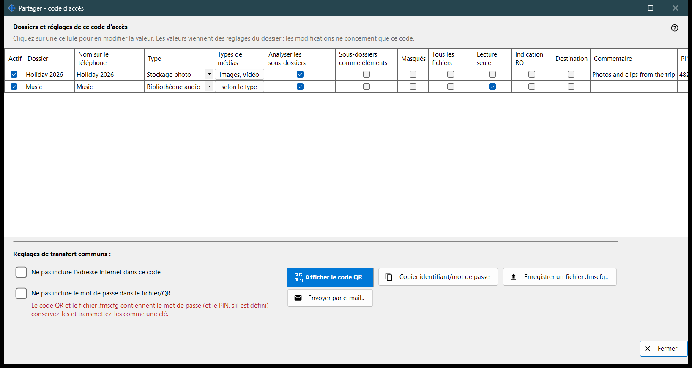
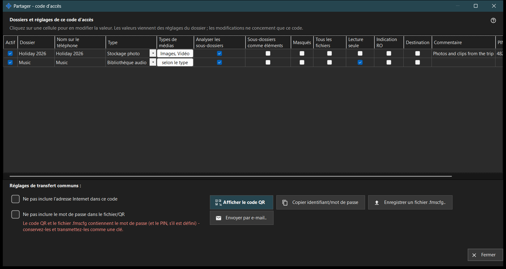

Partager - code d'accès
Objectif
Crée le code d'accès pour un téléphone : un code QR et un fichier .fmscfg qui contiennent l'adresse, l'identifiant et les dossiers choisis. Il s'ouvre depuis le bouton «Partager» de la fenêtre principale tant que le partage est actif, et vérifie que le téléphone peut réellement joindre le PC avant de remettre le code.


Dans cet ordre
- Cochez les dossiers à mettre dans le code.
- Modifiez chaque cellule du tableau qui doit différer pour ce code.
- Si besoin, cochez «Ne pas inclure l'adresse Internet dans ce code» ou «Ne pas inclure le mot de passe dans le fichier/QR».
- Attendez la vérification de l'accès.
- Affichez le code QR, enregistrez le fichier .fmscfg, envoyez-le par e-mail ou copiez l'identifiant et le mot de passe.
Les éléments
Dossiers et réglages pour ce code d'accès
Une ligne par dossier partagé, avec les colonnes Actif, Dossier, Nom sur le téléphone, Type, Types de médias, Analyser les sous-dossiers, Sous-dossiers comme éléments, Masqués, Lecture seule, Indication RO, Destination, Commentaire et Diaporama, s. Cliquez sur une cellule pour la modifier. Les valeurs partent des réglages propres à chaque dossier, et les modifications ne valent que pour ce code. «Lecture seule» est un vrai verrou sur le serveur ; «Indication RO» masque seulement les boutons de modification dans l'application. Un dossier de destination est toujours accessible en écriture, donc «Lecture seule» ne s'y applique pas.
Réglages de transfert communs
«Ne pas inclure l'adresse Internet dans ce code» fait que le téléphone se connecte uniquement par le réseau local ; cela n'éteint pas le serveur, et l'accès par internet pour l'ensemble du partage se ferme dans les paramètres du gestionnaire. «Ne pas inclure le mot de passe dans le fichier/QR» retire le mot de passe du code ; transmettez-le séparément. Le fait que le téléphone accepte un code sans mot de passe dépend de la version de l'application.
Vérification de l'accès
Pendant la lecture de l'état, la fenêtre l'indique. Si le serveur ne fonctionne pas, si aucun dossier n'est coché ou s'il n'y a pas d'adresse utilisable, une indication dit ce qui manque. Lorsque la vérification n'aboutit pas, ni le code ni le fichier ne sont remis : appuyez sur «Revérifier l'accès».
Afficher le code QR
Le code QR et le fichier .fmscfg donnent accès aux dossiers et contiennent le mot de passe et le code PIN, s'il est défini : conservez-les et remettez-les comme une clé. Si les réglages sont trop volumineux pour un code QR, enregistrez le fichier et envoyez-le à la place.
Fichier, e-mail et identifiant
«Enregistrer un fichier .fmscfg..» écrit le fichier ; sur un système de fichiers qui ne peut pas restreindre l'accès, ou dans un dossier que d'autres peuvent modifier, la fenêtre refuse, car le fichier contient une clé d'accès. «Envoyer par e-mail..» joint le fichier avec une note invitant à l'importer dans l'application Android puis à le supprimer. «Copier identifiant/mot de passe» place les deux dans le presse-papiers.
Paramètres du gestionnaire · Paramètres de partage SFTP · Paramètres du serveur d’échange